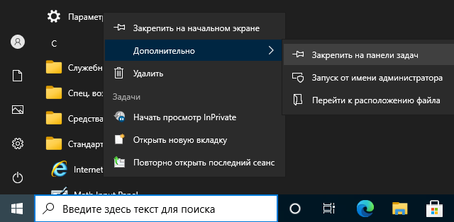

Закрепление значка Internet Exporer на панели задач
Вы можете закрепить значок Internet Explorer на панели задач.
-
Щёлкните на значке
 (Пуск) в левом нижнем углу экрана.
Отобразится содержимое меню Пуск (см. изображение ниже).
(Пуск) в левом нижнем углу экрана.
Отобразится содержимое меню Пуск (см. изображение ниже).
-
В списке меню слева выберите Стандартные - Windows.

-
Щёлкните правой кнопкой мыши на пункте Internet Explorer и выберите
Дополнительно > Закрепить на панели задач (см. изображение
ниже).
 Значок Internet Explorer отобразится на панели задач (см. изображение ниже).